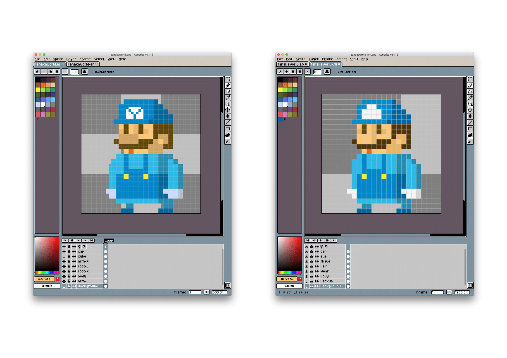

【2018/09】tanaka.world バージョンアップのお知らせ
Sep 23, 2018
色々バージョンアップしました👾
色の切り替え + アニメーションスキップ機能を追加
色の切り替え+アニメーションスキップ機能を加えた 👾🚀
— tanakaworld 🧢 (@_tanakaworld) September 16, 2018
https://t.co/vCVJp9G8qh #tanakaworld pic.twitter.com/cPngyAUx36
色の切り替え
- クエリパラメータ
colorにカラーコード16進数を指定すると，その色で描画されます - 例: https://tanaka.world/?color=4d1d9b
- 左上のカラフルボタンをクリックすると，ランダムでカラーを割り当て
- カラーの生成には randomColor を使用
アニメーションスキップ
- 右上の Skip ボタンでアニメーションスキップされます
- 服を脱がされると，寒いので震えます
アイコンが新しくなりました

- 左: 旧，右: 新
- ピクセル数を半分に減らし，シンプル化しました
- 48x48 → 24x24
- 使っているツールは aseprite
- 色味を微調整